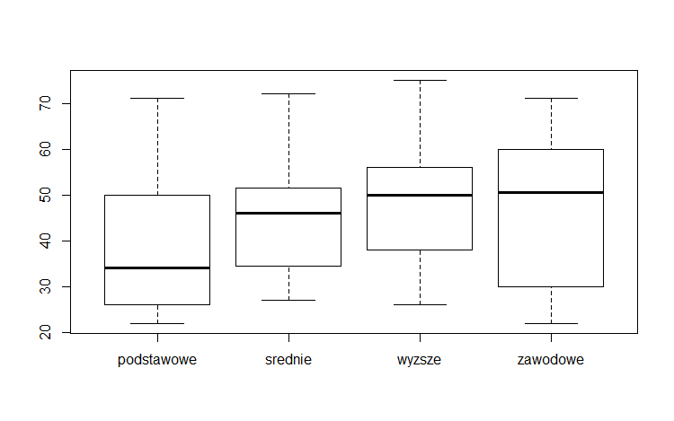
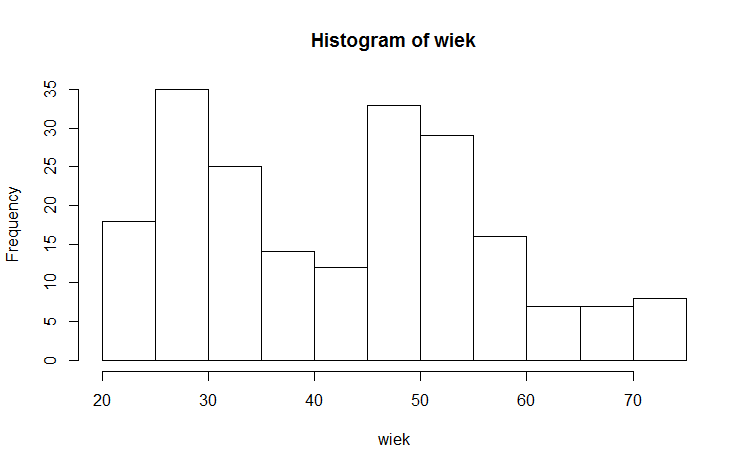
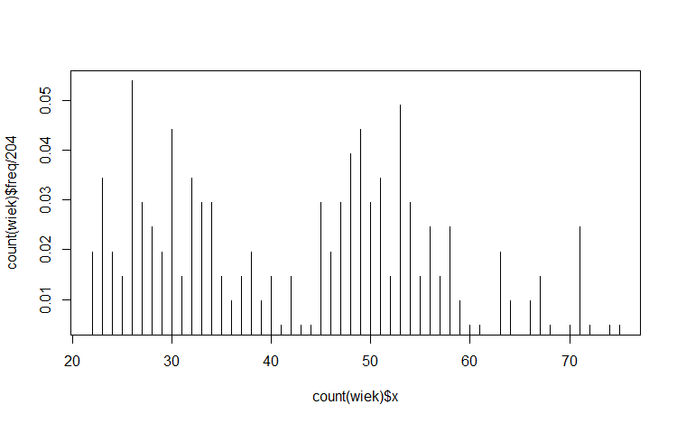
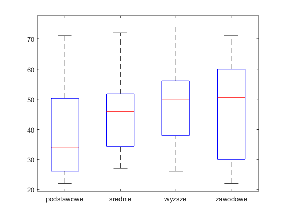
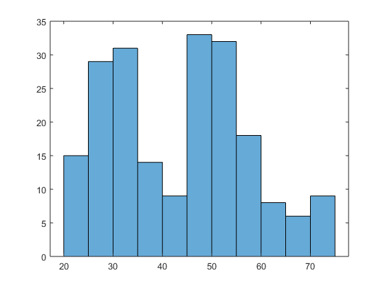
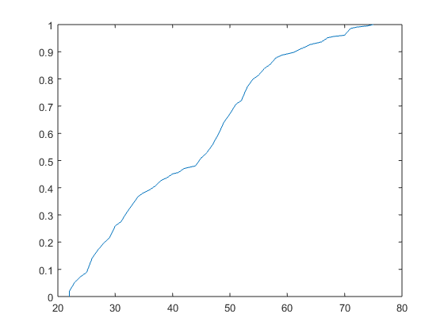

Laboratorium MAT-3
Aplikacje używane w pracowni komputerowej (do wyboru):
- Excel/VBA
- The R Project for Statistical Computing
- MATLAB
Excel/VBA
Uwagi dotyczące zadań przygotowawczych przekazywane są podczas zajęć.
R
Pobranie danych z arkusza lab0.xls dla wszystkich przykładów:
> library(openxlsx)
> X <- read.xlsx("lab0.xlsx", sheet = 1)
> head(X)
Zadanie A. Wykresy typu boxplot:
Rozwiązanie:
> boxplot(x~y)
> aggregate(x~y, data=lab1, FUN="quantile")
> h=hist(x)
> h$counts
> rp=hist(x, freq=FALSE, breaks=60); #plot(density(x), xlim = c(1, 100))
> plot(ecdf(x))

Zadanie C. Histogram:

Zadanie D. Wykres rozkładu prawdopodobieństwa:

Zadanie E. Wykres dystrybuanty:

MATLAB
Instrukcje związane z licencją studencką.
Zadanie A. Wykresy typu boxplot:
Rozwiązanie:
> boxplot(X,gr);

Zadanie C. Wykres typu histogram:
Rozwiązanie:
> histogram(X,11);

Zadanie E. Wykres dystrybuanty:
Rozwiązanie:
> plot(x,f);
